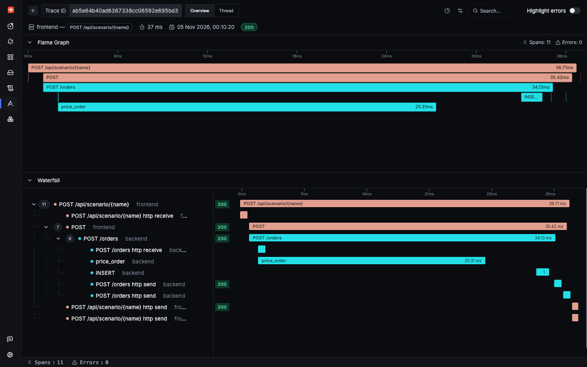

Learn
Traces, metrics and logs
Three kinds of telemetry answer three different questions. This page follows one real order through all of them.
| Signal | Question it answers | Example in this app |
|---|---|---|
| Trace | What happened to this one request, and where did the time go? | One order, as spans across frontend, backend and Postgres |
| Metric | How much, and how often, across everything? | orders.created, a running count of stored orders |
| Log | What did the code say at that moment? | order stored, with the order ID and total |
One request, end to end
Fire an order. The app returns a trace ID, which is your handle on everything that follows. Spans appear about 10 seconds later, because the SDK sends them in batches.
Here is a saved run of the same scenario:
Reading a trace
A trace is one request. A span is one timed step in it. Each span records its parent, which is how the tree is built. This order has five useful spans:
| Span | Service | Kind | Created by |
|---|---|---|---|
POST /api/scenario/{name} | frontend | Server | FastAPIInstrumentor |
POST | frontend | Client | HTTPXClientInstrumentor |
POST /orders | backend | Server | FastAPIInstrumentor, joining the same trace |
price_order | backend | Internal | Hand-written code in backend.py |
INSERT | backend | Client | PsycopgInstrumentor |
Kind tells you the span's role: Server handles an incoming request, Client makes an outgoing call, and Internal is work inside a process. Each span also has attributes (key-value details such as db.statement) and a status (Unset or Error).

http send and http receive spans, covered in gap 6.Logs: the same request, in words
The saved run above lists two logs with the same trace ID: order stored from the backend, and an HTTP Request line from the frontend. Nobody wrote that second one. It comes from the httpx library's own logger, which reaches SigNoz because the bridge sits on Python's root logger.
In a trace you see that a step took 25 ms. In a log, you see what the code decided to say about it.
Metrics: numbers with no trace ID
A metric is a number the app keeps updating, sent every 10 seconds here. It is cheap and good for trends and alerts, but it cannot tell you about one request. So metrics have no trace ID.
There is a second source of metrics here. SigNoz's collector derives signoz_calls_total and signoz_latency from spans, so you get call rates and latency without any metric code in the app.
How the signals connect
| Link | How it works here |
|---|---|
| Trace to logs | An exact link. Every OTLP log carries trace_id and span_id. |
| Metric to trace | No direct link. You match by service.name, attributes and time. |
| Everything to a service | service.name is on all three signals, set once by OTEL_SERVICE_NAME. |
| Spans to metrics | SigNoz generates signoz_* metrics from spans in its collector. |
A useful working order: a metric tells you something is wrong, a trace shows you where, and a log tells you why. Every incident in this tutorial follows that shape.
How the data reaches SigNoz
There are two separate paths, and the difference matters later.
The app's traces, metrics and logs take the first path, and they are standard OTLP with no SigNoz code. The second path adds what the app cannot see for itself, such as pod CPU. Because the app skips the agent, its telemetry has no Kubernetes attributes (gap 3), and its logs get collected twice (gap 4).
Check yourself: A user reports one failed checkout. Which signal do you open first to see what happened to that request?
Check yourself: What connects a log line to its trace in this app?
Check yourself: Why does orders.created have no trace ID on it?